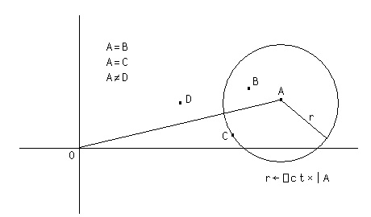

Complex Numbers
A complex number is a number consisting of a real and an imaginary part which is usually written in the form a+ bi, where a and b are real numbers, and i is the standard imaginary unit with the property i2= −1.
Dyalog APL adopts the J notation introduced in IBM APL2 to represent the value of a complex number which is written as aJb or ajb (without spaces). The former representation (with a capital J) is always used to display a value.
Notation
2+¯1*.5
2J1
.3j.5
0.3J0.5
1.2E5J¯4E¯4
120000J¯0.0004Arithmetic
The arithmetic primitive functions handle complex numbers in the appropriate way.
2j3+.3j.5 ⍝ (a+bi)+(c+di) = (a+c)+(b+d)i
2.3J3.5
2j3-.3j5 ⍝ (a+bi)-(c+di) = (a-c)+(b-d)i
1.7J¯2
2j3×.3j.5 ⍝ (a+bi)(c+di)= ac+bci+adi+bdi<sup>2</sup>
⍝ = (ac-bd)+(bc+ad)i
¯0.9J1.9The absolute value, or magnitude of a complex number is naturally obtained using the magnitude function
|3j4
5Monadic + of a complex number (a+bi) returns its conjugate (a-bi) ...
+3j4
3J¯4... which when multiplied by the complex number itself, produces the square of its magnitude.
3j4×3j¯4
25Furthermore, adding a complex number and its conjugate produces a real number:
3j4+3j¯4
6The famous Euler's Identityeiπ+1=0 may be expressed as follows:
1+*○0j1 ⍝ Euler Identity
0Circular functions
The basic set of circular functions X○Y cater for complex values in Y, while the following extended functions provide specific features for complex arguments. a and b are the real and imaginary parts of Y respectively, and θ is the phase of Y.
(-X) ○ Y |
X |
X ○ Y |
-8○Y |
8 |
(-1+Y*2)*0.5 |
Y |
9 |
a |
+Y |
10 |
|Y |
Y×0J1 |
11 |
b |
*Y×0J1 |
12 |
θ |
9○Y and 11○Y return the real and imaginary parts of Y respectively:
9 11○3.5J¯1.2
3.5 ¯1.2
9 11∘.○3.5J¯1.2 2J3 3J4
3.5 2 3
¯1.2 3 4Comparison
In comparing two complex numbers X and Y, X=Y is 1 if the magnitude of X-Y does not exceed ⎕CT times the larger of the magnitudes of X and Y; geometrically, X=Y if the number smaller in magnitude lies on or within a circle centred on the one with larger magnitude, having radius ⎕CT times the larger magnitude.

As with real values, complex values sufficiently close to Boolean or integral values are accepted by functions which require Boolean or integral values. For example:
2j1e¯14 ⍴ 12
12 12
0 ⍱ 1j1e¯15
0Dyalog APL always stores complex numbers as a pair of 64-bit binary floating-point numbers, regardless of the setting of ⎕FR. Comparisons between complex numbers and decimal floating-point numbers will require conversion of the decimal number to binary to allow the comparison. When ⎕FR=1287, comparisons are always subject to ⎕DCT, not ⎕CT - regardless of the data type used to represent a number.
This only really comes into play when determining whether the imaginary part of a complex number is so small that it can be considered to be on the real line. However, Dyalog recommends that you do not mix the use of complex and decimal numbers in the same component of an application.